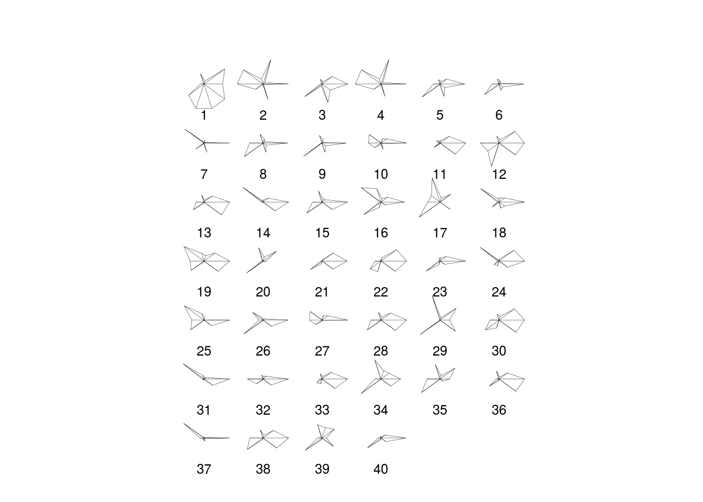
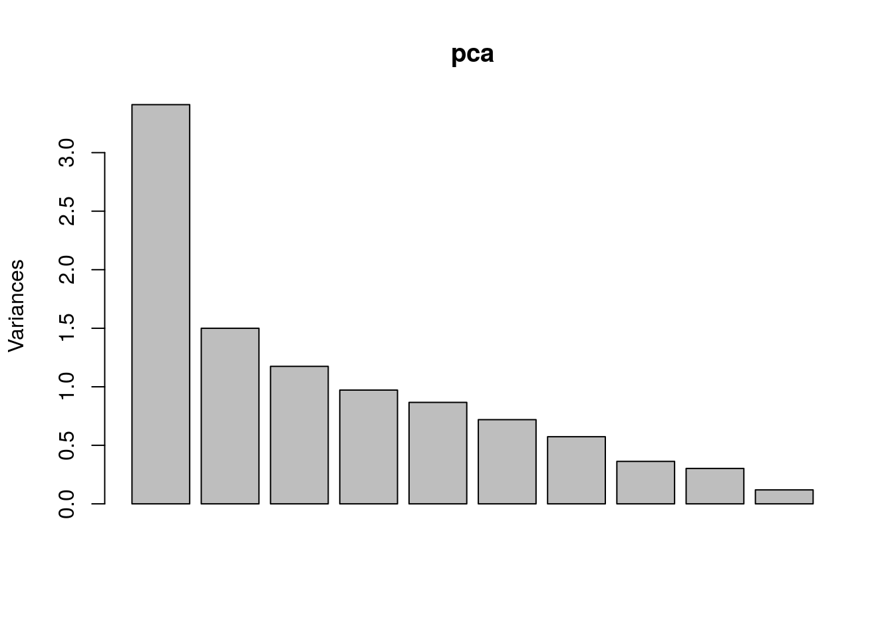
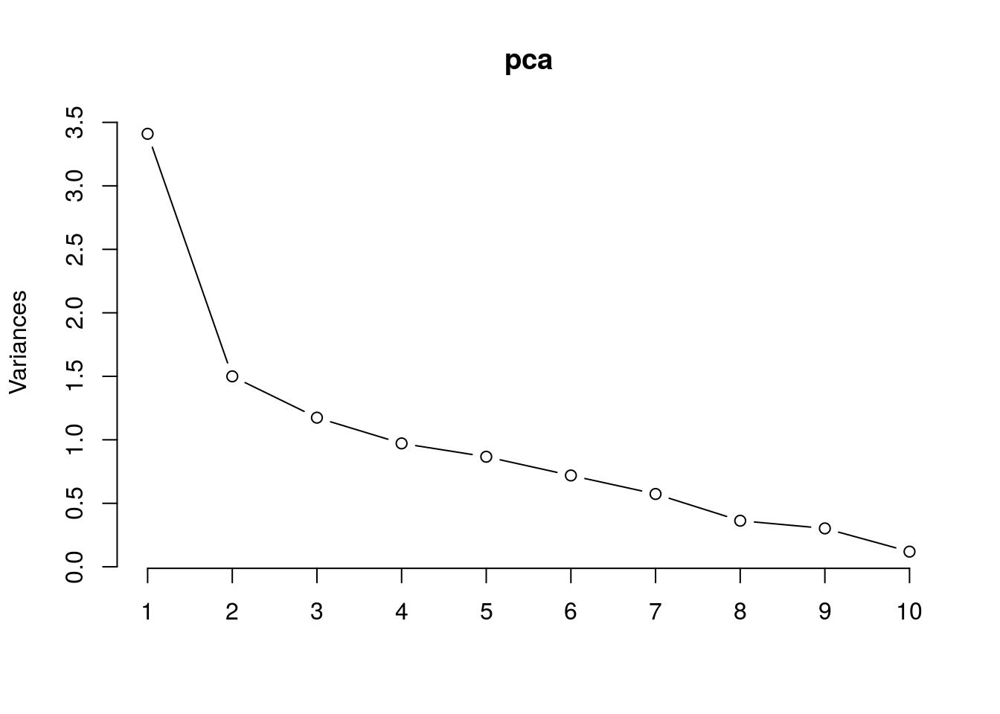

music<-read.csv("data.csv")
mod1<-lm(popularity~acousticness+danceability+duration_ms+energy+instrumentalness+liveness+loudness+speechiness+tempo+valence,data = music)
summary(mod1)##
## Call:
## lm(formula = popularity ~ acousticness + danceability + duration_ms +
## energy + instrumentalness + liveness + loudness + speechiness +
## tempo + valence, data = music)
##
## Residuals:
## Min 1Q Median 3Q Max
## -62.735 -11.975 -2.266 10.373 79.265
##
## Coefficients:
## Estimate Std. Error t value Pr(>|t|)
## (Intercept) 4.330e+01 4.023e-01 107.615 < 2e-16 ***
## acousticness -2.523e+01 1.735e-01 -145.418 < 2e-16 ***
## danceability 2.495e+01 3.009e-01 82.923 < 2e-16 ***
## duration_ms -1.212e-06 3.287e-07 -3.688 0.000226 ***
## energy 8.624e+00 3.246e-01 26.565 < 2e-16 ***
## instrumentalness -6.523e+00 1.435e-01 -45.462 < 2e-16 ***
## liveness -8.056e+00 2.312e-01 -34.851 < 2e-16 ***
## loudness 2.723e-01 1.208e-02 22.539 < 2e-16 ***
## speechiness -1.723e+01 3.431e-01 -50.204 < 2e-16 ***
## tempo 2.449e-02 1.334e-03 18.366 < 2e-16 ***
## valence -2.241e+01 1.989e-01 -112.670 < 2e-16 ***
## ---
## Signif. codes: 0 '***' 0.001 '**' 0.01 '*' 0.05 '.' 0.1 ' ' 1
##
## Residual standard error: 15.96 on 168581 degrees of freedom
## Multiple R-squared: 0.4435, Adjusted R-squared: 0.4435
## F-statistic: 1.344e+04 on 10 and 168581 DF, p-value: < 2.2e-16| Df | Sum Sq | Mean Sq | F value | Pr(>F) | |
|---|---|---|---|---|---|
| acousticness | 1 | 2.852224e+07 | 2.852224e+07 | 1.119850e+05 | 0.0000000 |
| danceability | 1 | 4.039266e+05 | 4.039266e+05 | 1.585910e+03 | 0.0000000 |
| duration_ms | 1 | 5.824635e+03 | 5.824635e+03 | 2.286887e+01 | 0.0000017 |
| energy | 1 | 2.439193e+04 | 2.439193e+04 | 9.576836e+01 | 0.0000000 |
| instrumentalness | 1 | 6.684480e+05 | 6.684480e+05 | 2.624482e+03 | 0.0000000 |
| liveness | 1 | 5.626335e+05 | 5.626335e+05 | 2.209030e+03 | 0.0000000 |
| loudness | 1 | 4.220132e+05 | 4.220132e+05 | 1.656922e+03 | 0.0000000 |
| speechiness | 1 | 3.794688e+05 | 3.794688e+05 | 1.489883e+03 | 0.0000000 |
| tempo | 1 | 3.730151e+00 | 3.730151e+00 | 1.464540e-02 | 0.9036767 |
| valence | 1 | 3.233257e+06 | 3.233257e+06 | 1.269452e+04 | 0.0000000 |
| Residuals | 168581 | 4.293709e+07 | 2.546971e+02 | NA | NA |
Looking at the summary of this linear model, we can tell that all independent variables are significant for predicting the popularity of music trend. However, the ANOVA gives us that tempo is not important with other variables hold constant. Hence, I remove tempo vairables and get the second linear model.
mod2<-lm(popularity~acousticness+danceability+duration_ms+energy+instrumentalness+liveness+loudness+speechiness+valence,data = music)
summary(mod2)##
## Call:
## lm(formula = popularity ~ acousticness + danceability + duration_ms +
## energy + instrumentalness + liveness + loudness + speechiness +
## valence, data = music)
##
## Residuals:
## Min 1Q Median 3Q Max
## -61.650 -12.003 -2.261 10.382 76.778
##
## Coefficients:
## Estimate Std. Error t value Pr(>|t|)
## (Intercept) 4.652e+01 3.625e-01 128.342 < 2e-16 ***
## acousticness -2.546e+01 1.732e-01 -147.004 < 2e-16 ***
## danceability 2.404e+01 2.971e-01 80.927 < 2e-16 ***
## duration_ms -1.347e-06 3.289e-07 -4.096 4.21e-05 ***
## energy 8.831e+00 3.248e-01 27.190 < 2e-16 ***
## instrumentalness -6.601e+00 1.436e-01 -45.984 < 2e-16 ***
## liveness -8.216e+00 2.312e-01 -35.531 < 2e-16 ***
## loudness 2.824e-01 1.208e-02 23.379 < 2e-16 ***
## speechiness -1.701e+01 3.433e-01 -49.540 < 2e-16 ***
## valence -2.181e+01 1.964e-01 -111.052 < 2e-16 ***
## ---
## Signif. codes: 0 '***' 0.001 '**' 0.01 '*' 0.05 '.' 0.1 ' ' 1
##
## Residual standard error: 15.98 on 168582 degrees of freedom
## Multiple R-squared: 0.4424, Adjusted R-squared: 0.4424
## F-statistic: 1.486e+04 on 9 and 168582 DF, p-value: < 2.2e-16The second linear model seems good since each variable indicates the significance for the prediction of popularity of music trend.
## Start: AIC=934358.3
## popularity ~ acousticness + danceability + duration_ms + energy +
## instrumentalness + liveness + loudness + speechiness + valence
##
## Df Sum of Sq RSS AIC
## <none> 43023008 934358
## - duration_ms 1 4282 43027289 934373
## - loudness 1 139495 43162503 934902
## - energy 1 188676 43211683 935094
## - liveness 1 322192 43345200 935614
## - instrumentalness 1 539649 43562656 936458
## - speechiness 1 626328 43649336 936793
## - danceability 1 1671367 44694375 940782
## - valence 1 3147347 46170354 946259
## - acousticness 1 5515037 48538045 954691## Start: AIC=934358.3
## popularity ~ acousticness + danceability + duration_ms + energy +
## instrumentalness + liveness + loudness + speechiness + valence## Start: AIC=934358.3
## popularity ~ acousticness + danceability + duration_ms + energy +
## instrumentalness + liveness + loudness + speechiness + valence
##
## Df Sum of Sq RSS AIC
## <none> 43023008 934358
## - duration_ms 1 4282 43027289 934373
## - loudness 1 139495 43162503 934902
## - energy 1 188676 43211683 935094
## - liveness 1 322192 43345200 935614
## - instrumentalness 1 539649 43562656 936458
## - speechiness 1 626328 43649336 936793
## - danceability 1 1671367 44694375 940782
## - valence 1 3147347 46170354 946259
## - acousticness 1 5515037 48538045 954691##
## Call:
## lm(formula = popularity ~ acousticness + danceability + duration_ms +
## energy + instrumentalness + liveness + loudness + speechiness +
## valence, data = music)
##
## Residuals:
## Min 1Q Median 3Q Max
## -61.650 -12.003 -2.261 10.382 76.778
##
## Coefficients:
## Estimate Std. Error t value Pr(>|t|)
## (Intercept) 4.652e+01 3.625e-01 128.342 < 2e-16 ***
## acousticness -2.546e+01 1.732e-01 -147.004 < 2e-16 ***
## danceability 2.404e+01 2.971e-01 80.927 < 2e-16 ***
## duration_ms -1.347e-06 3.289e-07 -4.096 4.21e-05 ***
## energy 8.831e+00 3.248e-01 27.190 < 2e-16 ***
## instrumentalness -6.601e+00 1.436e-01 -45.984 < 2e-16 ***
## liveness -8.216e+00 2.312e-01 -35.531 < 2e-16 ***
## loudness 2.824e-01 1.208e-02 23.379 < 2e-16 ***
## speechiness -1.701e+01 3.433e-01 -49.540 < 2e-16 ***
## valence -2.181e+01 1.964e-01 -111.052 < 2e-16 ***
## ---
## Signif. codes: 0 '***' 0.001 '**' 0.01 '*' 0.05 '.' 0.1 ' ' 1
##
## Residual standard error: 15.98 on 168582 degrees of freedom
## Multiple R-squared: 0.4424, Adjusted R-squared: 0.4424
## F-statistic: 1.486e+04 on 9 and 168582 DF, p-value: < 2.2e-16Model selection is critical for choosing the “best” appropriate model we want. The smaller AIC, the better model. AIC stands for Akaike Information Criterion that is to estimate the out-of-sample prediction error as a statistical tool. Here, the smallest AIC is 934358. We have three different model selection methods that are stepwise, backward and forward.
newmusic<-data.frame(music$acousticness,music$danceability,music$duration_ms,music$energy,music$instrumentalness,music$liveness,music$loudness,music$speechiness,music$popularity,music$valence)
colnames(newmusic)<-c('acousticness','danceability','duration_ms','energy','instrumentalness','liveness','loudness','speechiness','popularity','valence')
head(newmusic)| acousticness | danceability | duration_ms | energy | instrumentalness | liveness | loudness | speechiness | popularity | valence |
|---|---|---|---|---|---|---|---|---|---|
| 0.732 | 0.819 | 180533 | 0.341 | 0.00e+00 | 0.160 | -12.441 | 0.4150 | 8 | 0.9630 |
| 0.982 | 0.279 | 831667 | 0.211 | 8.78e-01 | 0.665 | -20.096 | 0.0366 | 5 | 0.0594 |
| 0.996 | 0.518 | 159507 | 0.203 | 0.00e+00 | 0.115 | -10.589 | 0.0615 | 6 | 0.4060 |
| 0.982 | 0.279 | 831667 | 0.211 | 8.78e-01 | 0.665 | -20.096 | 0.0366 | 4 | 0.0594 |
| 0.957 | 0.418 | 166693 | 0.193 | 1.70e-06 | 0.229 | -10.096 | 0.0380 | 4 | 0.2530 |
| 0.957 | 0.259 | 186467 | 0.212 | 2.22e-04 | 0.236 | -13.300 | 0.0358 | 2 | 0.2180 |

The star graph tells us the similar or different star image for each variable. It looks like face recognition.
## acousticness danceability duration_ms energy
## Min. :0.0000 Min. :0.0000 Min. : 5108 Min. :0.0000
## 1st Qu.:0.0978 1st Qu.:0.4120 1st Qu.: 172160 1st Qu.:0.2650
## Median :0.5150 Median :0.5430 Median : 209133 Median :0.4800
## Mean :0.5014 Mean :0.5336 Mean : 232702 Mean :0.4886
## 3rd Qu.:0.8960 3rd Qu.:0.6620 3rd Qu.: 263707 3rd Qu.:0.7090
## Max. :0.9960 Max. :0.9880 Max. :5403500 Max. :1.0000
## instrumentalness liveness loudness speechiness
## Min. :0.000000 Min. :0.0000 Min. :-60.000 Min. :0.00000
## 1st Qu.:0.000000 1st Qu.:0.0982 1st Qu.:-14.388 1st Qu.:0.03480
## Median :0.000264 Median :0.1340 Median :-10.466 Median :0.04460
## Mean :0.169476 Mean :0.2052 Mean :-11.358 Mean :0.08362
## 3rd Qu.:0.111000 3rd Qu.:0.2590 3rd Qu.: -7.135 3rd Qu.:0.07230
## Max. :1.000000 Max. :1.0000 Max. : 3.855 Max. :0.96800
## popularity valence
## Min. : 0.00 Min. :0.0000
## 1st Qu.: 13.00 1st Qu.:0.3150
## Median : 34.00 Median :0.5390
## Mean : 31.63 Mean :0.5285
## 3rd Qu.: 48.00 3rd Qu.:0.7490
## Max. :100.00 Max. :1.0000## acousticness danceability duration_ms energy
## 1.428787e-01 3.094748e-02 1.497983e+10 7.147402e-02
## instrumentalness liveness loudness speechiness
## 9.946638e-02 3.093949e-02 3.215089e+01 1.438006e-02
## popularity valence
## 4.576716e+02 6.993744e-02## acousticness danceability duration_ms energy
## 3.779929e-01 1.759189e-01 1.223921e+05 2.673462e-01
## instrumentalness liveness loudness speechiness
## 3.153829e-01 1.758962e-01 5.670176e+00 1.199169e-01
## popularity valence
## 2.139326e+01 2.644569e-01This gives us the summary statistics, variance and standard deviation of each variable.
| acousticness | danceability | duration_ms | energy | instrumentalness | liveness | loudness | speechiness | popularity | valence | explicit |
|---|---|---|---|---|---|---|---|---|---|---|
| 0.732 | 0.819 | 180533 | 0.341 | 0.00e+00 | 0.160 | -12.441 | 0.4150 | 8 | 0.9630 | 0 |
| 0.982 | 0.279 | 831667 | 0.211 | 8.78e-01 | 0.665 | -20.096 | 0.0366 | 5 | 0.0594 | 0 |
| 0.996 | 0.518 | 159507 | 0.203 | 0.00e+00 | 0.115 | -10.589 | 0.0615 | 6 | 0.4060 | 0 |
| 0.982 | 0.279 | 831667 | 0.211 | 8.78e-01 | 0.665 | -20.096 | 0.0366 | 4 | 0.0594 | 0 |
| 0.957 | 0.418 | 166693 | 0.193 | 1.70e-06 | 0.229 | -10.096 | 0.0380 | 4 | 0.2530 | 0 |
| 0.957 | 0.259 | 186467 | 0.212 | 2.22e-04 | 0.236 | -13.300 | 0.0358 | 2 | 0.2180 | 0 |
## [1] 168592 11## acousticness danceability duration_ms energy
## acousticness 4.389183e-02 -9.851423e-04 -1.158963e+03 -0.014307430
## danceability -9.851423e-04 2.774154e-02 -7.984537e+02 -0.008708145
## duration_ms -1.158963e+03 -7.984537e+02 5.882155e+09 876.855059452
## energy -1.430743e-02 -8.708145e-03 8.768551e+02 0.031270005
## instrumentalness -6.920642e-04 -4.032365e-03 1.282483e+02 0.001102792
## liveness 1.658556e-03 -5.042253e-03 5.165318e+02 0.004682174
## loudness -1.959696e-01 -1.219010e-02 1.261545e+04 0.329522264
## speechiness 4.363721e-03 3.120353e-03 -2.759239e+02 -0.002527253
## popularity 2.554199e-01 3.515795e-01 -1.246782e+05 -0.398216245
## valence -7.274560e-04 1.105763e-02 -6.010590e+02 0.007089663
## instrumentalness liveness loudness speechiness
## acousticness -6.920642e-04 1.658556e-03 -1.959696e-01 4.363721e-03
## danceability -4.032365e-03 -5.042253e-03 -1.219010e-02 3.120353e-03
## duration_ms 1.282483e+02 5.165318e+02 1.261545e+04 -2.759239e+02
## energy 1.102792e-03 4.682174e-03 3.295223e-01 -2.527253e-03
## instrumentalness 1.382256e-02 1.350535e-04 -4.626987e-02 -2.409389e-03
## liveness 1.350535e-04 3.111692e-02 -2.296257e-02 5.103822e-03
## loudness -4.626987e-02 -2.296257e-02 8.961037e+00 -1.000507e-01
## speechiness -2.409389e-03 5.103822e-03 -1.000507e-01 2.359715e-02
## popularity -2.284524e-01 -4.082567e-01 7.977754e+00 -3.709023e-01
## valence -2.433276e-03 -1.951120e-04 7.523000e-02 3.207231e-03
## popularity valence
## acousticness 2.554199e-01 -7.274560e-04
## danceability 3.515795e-01 1.105763e-02
## duration_ms -1.246782e+05 -6.010590e+02
## energy -3.982162e-01 7.089663e-03
## instrumentalness -2.284524e-01 -2.433276e-03
## liveness -4.082567e-01 -1.951120e-04
## loudness 7.977754e+00 7.523000e-02
## speechiness -3.709023e-01 3.207231e-03
## popularity 1.843935e+02 -3.218359e-01
## valence -3.218359e-01 4.961356e-02## acousticness danceability duration_ms energy
## acousticness 1.410427e-01 -1.485916e-02 -4.266612e+03 -7.697737e-02
## danceability -1.485916e-02 2.959635e-02 -2.882144e+03 1.054665e-02
## duration_ms -4.266612e+03 -2.882144e+03 1.567999e+10 7.832944e+02
## energy -7.697737e-02 1.054665e-02 7.832944e+02 7.148590e-02
## instrumentalness 3.965217e-02 -1.494314e-02 3.207378e+03 -2.530378e-02
## liveness -1.530368e-03 -3.411812e-03 8.281210e+02 6.415881e-03
## loudness -1.210828e+00 2.909260e-01 -2.357527e+04 1.175099e+00
## speechiness 1.627180e-03 3.215619e-03 8.174933e+01 -4.151451e-04
## popularity -4.692545e+00 6.478156e-01 1.541028e+05 2.633134e+00
## valence -2.092795e-02 2.778940e-02 -6.950977e+03 2.740537e-02
## instrumentalness liveness loudness speechiness
## acousticness 3.965217e-02 -1.530368e-03 -1.210828e+00 0.0016271801
## danceability -1.494314e-02 -3.411812e-03 2.909260e-01 0.0032156190
## duration_ms 3.207378e+03 8.281210e+02 -2.357527e+04 81.7493314818
## energy -2.530378e-02 6.415881e-03 1.175099e+00 -0.0004151451
## instrumentalness 1.043333e-01 -2.679135e-03 -7.896379e-01 -0.0026226834
## liveness -2.679135e-03 3.091070e-02 6.671577e-02 0.0026731345
## loudness -7.896379e-01 6.671577e-02 3.227152e+01 -0.0509718505
## speechiness -2.622683e-03 2.673134e-03 -5.097185e-02 0.0125518028
## popularity -1.943542e+00 -2.664367e-01 4.870813e+01 -0.3341728354
## valence -1.803353e-02 1.177794e-04 5.260670e-01 0.0019323260
## popularity valence
## acousticness -4.692545e+00 -2.092795e-02
## danceability 6.478156e-01 2.778940e-02
## duration_ms 1.541028e+05 -6.950977e+03
## energy 2.633134e+00 2.740537e-02
## instrumentalness -1.943542e+00 -1.803353e-02
## liveness -2.664367e-01 1.177794e-04
## loudness 4.870813e+01 5.260670e-01
## speechiness -3.341728e-01 1.932326e-03
## popularity 4.377822e+02 1.139460e-01
## valence 1.139460e-01 7.143513e-02## acousticness danceability duration_ms energy
## acousticness 1.00000000 -0.2628325 -0.085879081 -0.76702237
## danceability -0.26283247 1.0000000 -0.128299495 0.23880625
## duration_ms -0.08587908 -0.1282995 1.000000000 0.02289850
## energy -0.76702237 0.2388063 0.022898497 1.00000000
## instrumentalness 0.33992294 -0.2830957 0.078176917 -0.30314630
## liveness -0.02490361 -0.1093318 0.037298094 0.13808993
## loudness -0.58545674 0.3179513 -0.031604741 0.77919438
## speechiness -0.02641660 0.2109519 0.002156806 0.03613676
## popularity -0.60799176 0.2296092 0.049449022 0.48017501
## valence -0.18745098 0.5650213 -0.200534919 0.36105162
## instrumentalness liveness loudness speechiness
## acousticness 0.33992294 -0.024903607 -0.58545674 -0.026416602
## danceability -0.28309572 -0.109331773 0.31795133 0.210951946
## duration_ms 0.07817692 0.037298094 -0.03160474 0.002156806
## energy -0.30314630 0.138089925 0.77919438 0.036136758
## instrumentalness 1.00000000 -0.047391359 -0.43970500 -0.103092055
## liveness -0.04739136 1.000000000 0.06516428 0.140732970
## loudness -0.43970500 0.065164284 1.00000000 -0.021187136
## speechiness -0.10309206 0.140732970 -0.02118714 1.000000000
## popularity -0.30649973 -0.067320070 0.44073222 -0.053837815
## valence -0.19901896 0.001406362 0.32272871 0.055727440
## popularity valence
## acousticness -0.607991758 -0.187450977
## danceability 0.229609236 0.565021274
## duration_ms 0.049449022 -0.200534919
## energy 0.480175005 0.361051615
## instrumentalness -0.306499733 -0.199018956
## liveness -0.067320070 0.001406362
## loudness 0.440732218 0.322728707
## speechiness -0.053837815 0.055727440
## popularity 1.000000000 0.005967999
## valence 0.005967999 1.000000000## acousticness danceability duration_ms energy
## acousticness 1.428787e-01 -1.747734e-02 -3.973055e+03 -0.077511438
## danceability -1.747734e-02 3.094748e-02 -2.762428e+03 0.011231362
## duration_ms -3.973055e+03 -2.762428e+03 1.497983e+10 749.263450033
## energy -7.751144e-02 1.123136e-02 7.492635e+02 0.071474017
## instrumentalness 4.052307e-02 -1.570667e-02 3.017659e+03 -0.025560216
## liveness -1.655779e-03 -3.383106e-03 8.029651e+02 0.006493707
## loudness -1.254801e+00 3.171537e-01 -2.193321e+04 1.181180931
## speechiness -1.197405e-03 4.450169e-03 3.165519e+01 0.001158520
## popularity -4.916526e+00 8.641297e-01 1.294757e+05 2.746316609
## valence -1.873813e-02 2.628647e-02 -6.490802e+03 0.025526911
## instrumentalness liveness loudness speechiness
## acousticness 4.052307e-02 -1.655779e-03 -1.254801e+00 -0.001197405
## danceability -1.570667e-02 -3.383106e-03 3.171537e-01 0.004450169
## duration_ms 3.017659e+03 8.029651e+02 -2.193321e+04 31.655185358
## energy -2.556022e-02 6.493707e-03 1.181181e+00 0.001158520
## instrumentalness 9.946638e-02 -2.629020e-03 -7.863142e-01 -0.003898914
## liveness -2.629020e-03 3.093949e-02 6.499242e-02 0.002968470
## loudness -7.863142e-01 6.499242e-02 3.215089e+01 -0.014406188
## speechiness -3.898914e-03 2.968470e-03 -1.440619e-02 0.014380057
## popularity -2.067975e+00 -2.533250e-01 5.346238e+01 -0.138116221
## valence -1.659921e-02 6.541970e-05 4.839372e-01 0.001767276
## popularity valence
## acousticness -4.916526e+00 -1.873813e-02
## danceability 8.641297e-01 2.628647e-02
## duration_ms 1.294757e+05 -6.490802e+03
## energy 2.746317e+00 2.552691e-02
## instrumentalness -2.067975e+00 -1.659921e-02
## liveness -2.533250e-01 6.541970e-05
## loudness 5.346238e+01 4.839372e-01
## speechiness -1.381162e-01 1.767276e-03
## popularity 4.576716e+02 3.376452e-02
## valence 3.376452e-02 6.993744e-02There exist correlation among these variables.
library(ISLR)
library(rgl)
X<-as.matrix(newmusic[,c('acousticness','danceability','duration_ms','energy','instrumentalness','liveness','loudness','speechiness','popularity','valence')])
pca <- prcomp(X, retx=TRUE,center = TRUE, scale. = TRUE)

Principle component anaylsis is very useful in the real world to solve industry problems because we have super complicated and large dataset. It is statistical analysis tool for data reduction by increasing the interpretation and minimizing the information loss simutaneously. A screen plot indicates how much variation each principle component explains for the information. In this case, we can choose eight principle components since the variance is close to 0.5 but also maintain the most information.
loadings <- pca$rotation
scores <- pca$x
dev.new(height=7, width=7)
biplot(scores[,1:8],loadings[,1:8],xlim = c(-5,5),ylim=c(-5,5),expand=1)PCA reduces the dimensions by the construction of principle components. PCs displays variation and explains varied influences of original variables. Loadings and scores are used to find out what produces the diffrence among clusters. In this case, we can group acousticness and instrumentalness as factor transmittor; group speechiness,valence and danceability as factor rhythm; group popularity,loudness,energy,liveness and duration_ms as factor activeness.